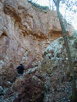
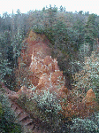
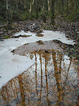
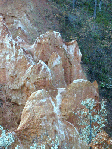
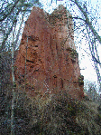
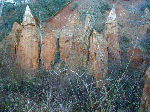
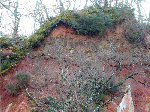
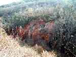

|

Une partie de la falaise de grès s'est
effondrée, ce qui rend l'exploration plus difficile.
|

Une partie du parcours est
aménagée, des escaliers en rondins et des
garde-fous permettent une visite en toute
sécurité.
|

Il ne faisait pas chaud au fond de la
vallée ce dimanche matin !
|
|

Une belle enfilade vue du promontoire
aménagé au dessus de la partie
éboulée.
|

En continuant dans la partie "sauvage", vers
l'amont, on trouve d'autres colonnes dont les couleurs
varient suivant la teneur en sel de fer.
|

Nous faufilant à travers ronces et arbres
cassés, nous sommes arrivés au bout de la
vallée.
Cette série de cheminées valait le
détour.
|
|

On distingue bien les différentes couches
du sol qui a été rongé par les eaux.
|

La même série vue du grand
pré proche du parking.
|
Au dessus de la Vallée des
Saints, le cirque des Mottes vaut
le détour !
 sources de Bard sources de Bard
 (Auvergne)
Lien pour
plus d'information sur la commune de Boudes (Auvergne)
Lien pour
plus d'information sur la commune de Boudes
|